Art direction and editorial design for the Enspiral Foundation's flagship book on the future of work. The medium had to be the message.
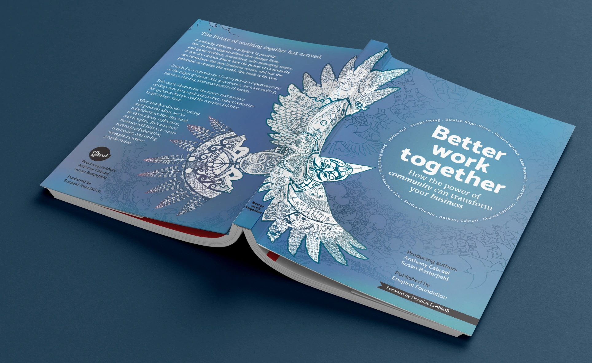
A book preaching decentralized collaboration could not be made by a committee locked in one room. The production had to prove the thesis.
The production itself was the proof. From São Paulo, I held the structure that connected writers, artists, publishers, and printers on five continents. The sun never set on this book.
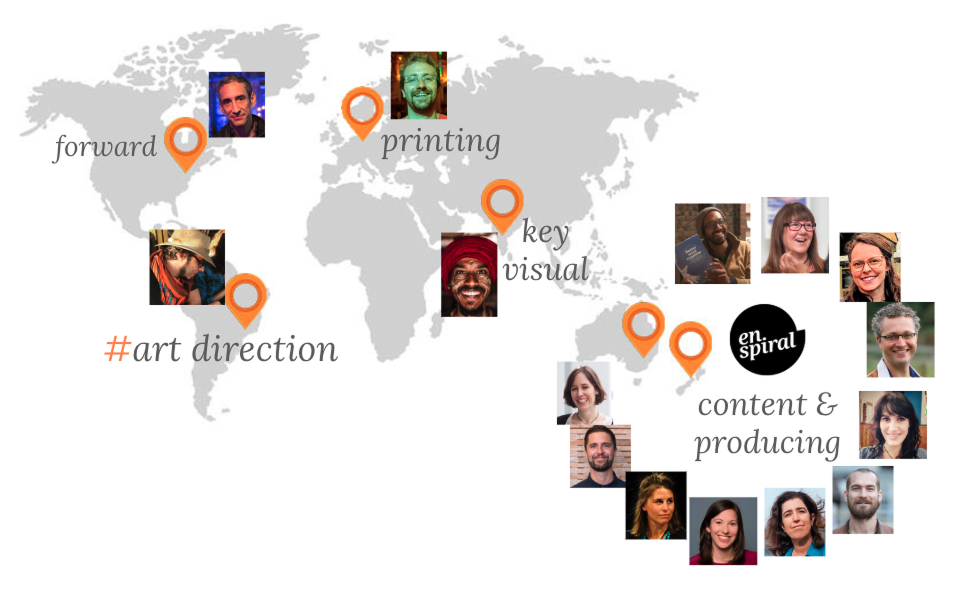
Susan Basterfield, Ants Cabraal (editors), Alanna Irving, Sandra Chemin, Damian Sligo-Green, Chelsea Robinson, Joshua Vial, Kate Beecroft, Francesca Pick, Richard Bartlett, Silvia Zuur (co-authors), Mukund Yier (key visual), Joriam Ramos (print production), Renato Waru (lead design)
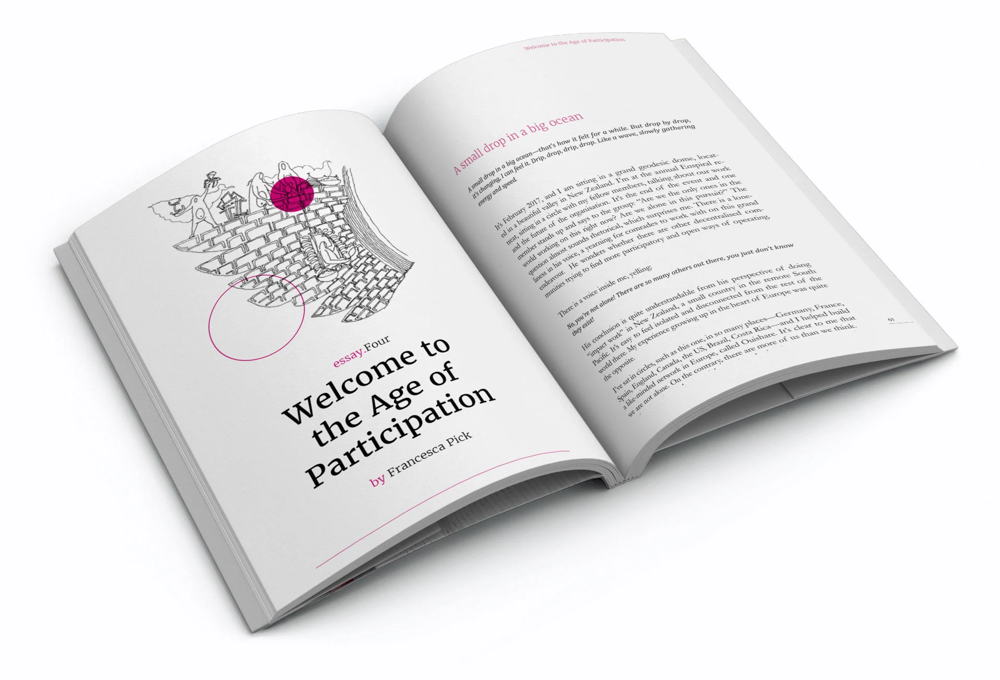
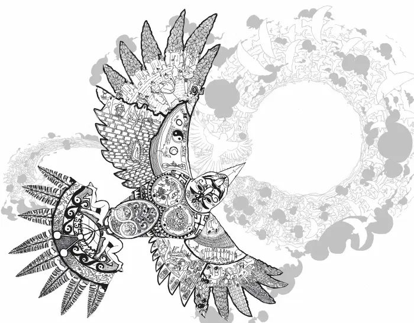
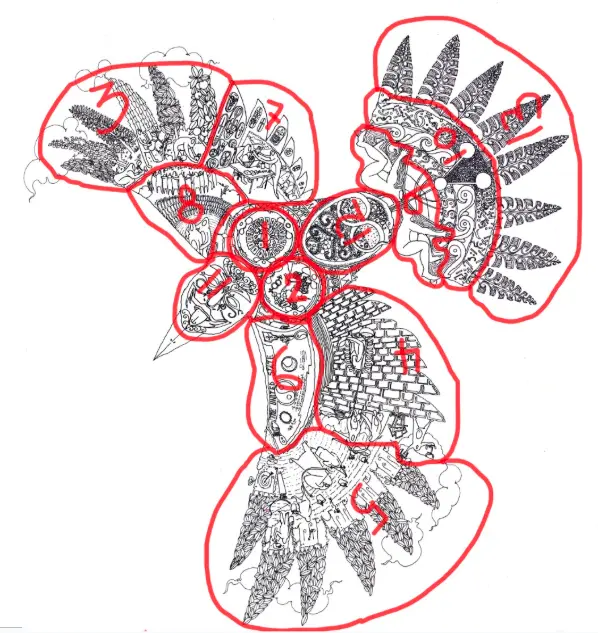
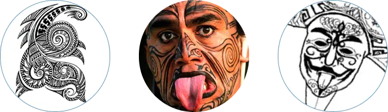
Rooted in Māori visual traditions, where identity is carried through intricate, interlocking patterns, the bird on the cover was hand-drawn entirely by artist Mukund Yier in India. Each fragment of the bird becomes the opening illustration for an individual essay: the whole contains the parts, and the parts build the whole. Up close: eleven distinct voices. At distance: a single creature in flight.
Front cover, spine, and back cover: the illustration stretches uninterrupted across all three surfaces. The circular title lockup on the right mirrors the dark aperture of the back cover, turning the book into a single continuous object whether shelved or open.
To keep the budget honest, the eleven essays run in only two colors: black and magenta. A dozen special chapters break into full color, marking shifts in rhythm and giving the book its visual punctuation. Restraint made the color count.
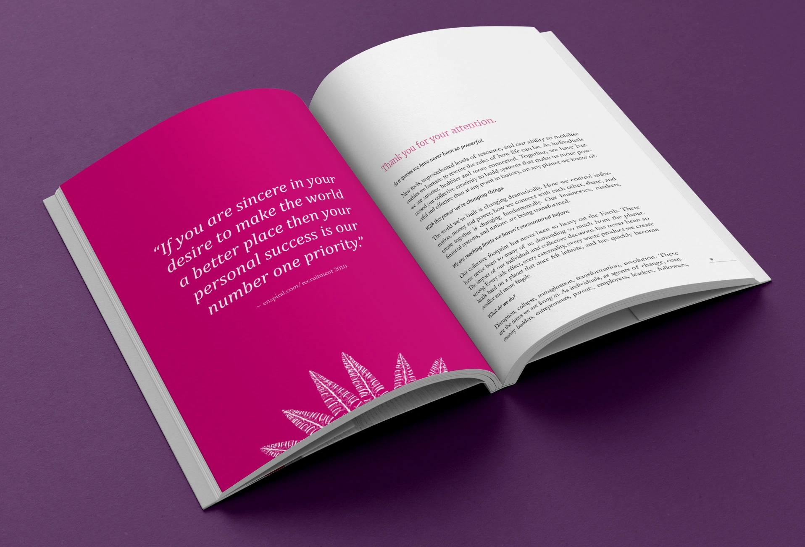
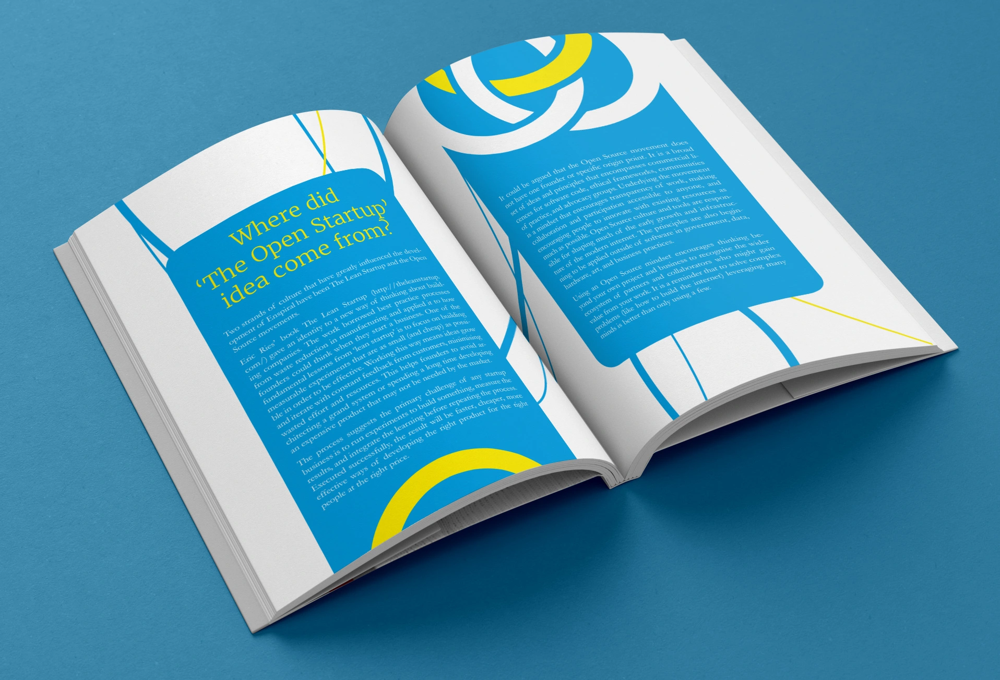
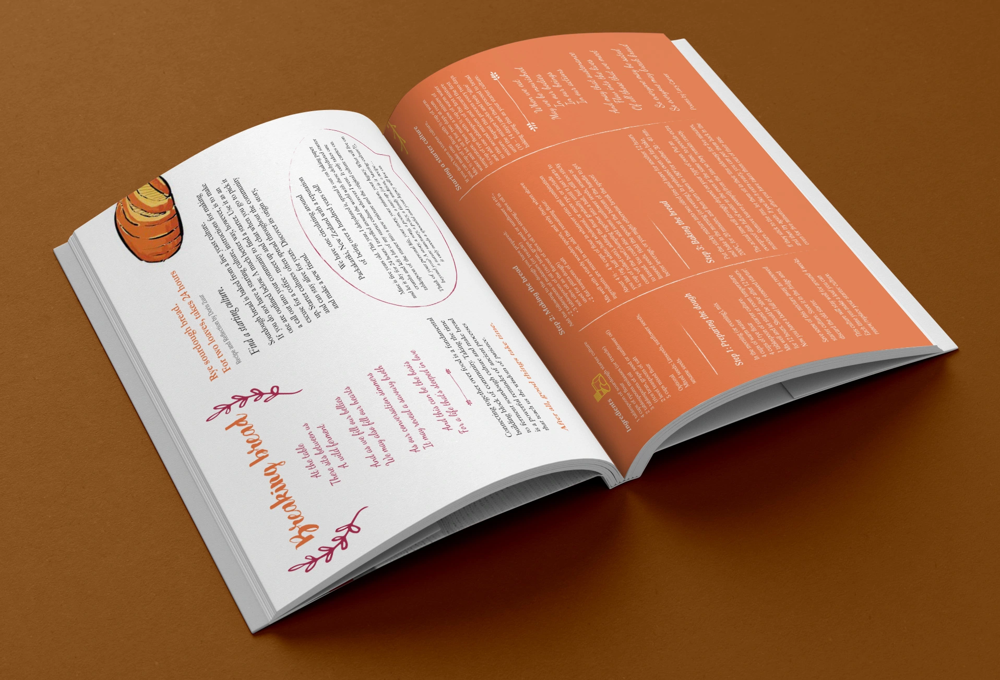
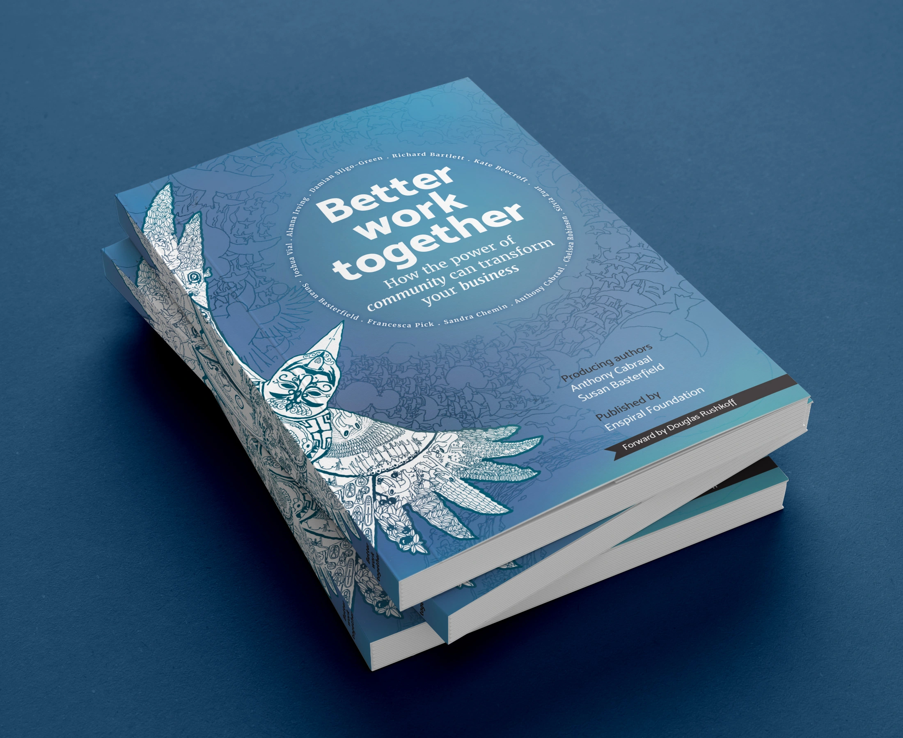
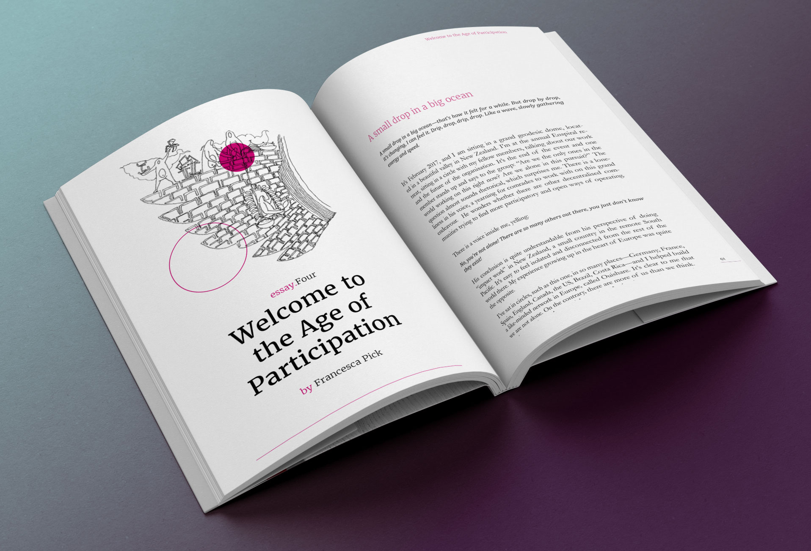
Creative director Renato went above and beyond to express the collective, creative spirit of this work, and together with artist Mukund transformed text into a wonderful piece of art.Ants Cabraal Editor, Better Work Together · Enspiral Foundation